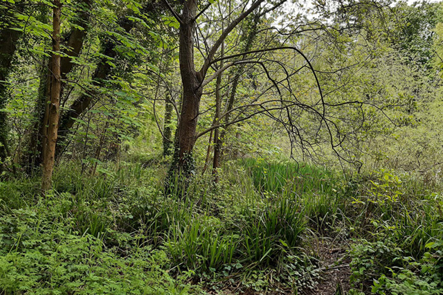
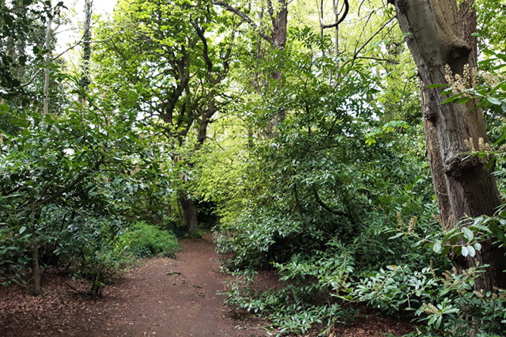
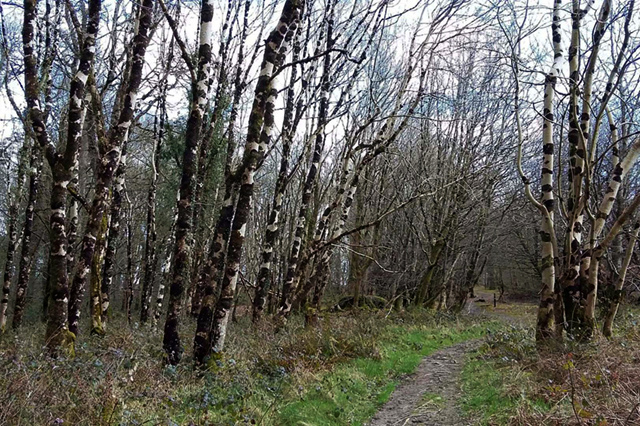
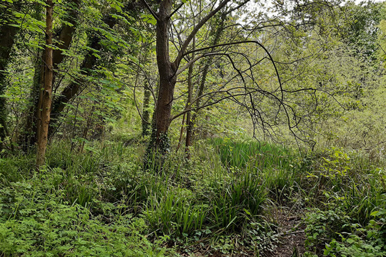
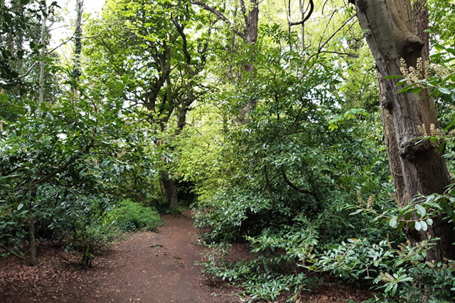
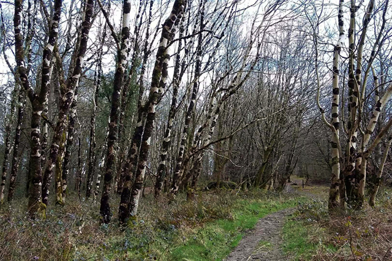

Events and Guided Walks
Join us and connect with like minded people!
We run a variety of different walks and events, so keep an eye on this page or on our social media channels to stay up to date! You can also sign up to our newsletter to receive regular updates on our upcoming events.
Our walks usually take place in the greater Dublin area and in the Dublin and Wicklow Mountains. We run a mix of walks in different settings and incorporating different techniques like mindful walking and meditation and also forest bathing. All of our walks are led by certified guides.
We are currently running guided mindfulness sessions on Zoom once a week and we hope to add more classes like this to our schedule. We will also be hosting special events with talks by guest speakers, so keep an eye out for these.
To register, ask a question or find out more about any of our events, just get in touch with us via our contact form and we'll get back to you. We look forward to meeting you!
You'll find a list of our upcoming walks and events below, as well as some photos and reviews from previous events. You can also see more photos and customer reviews on our Tripadvisor page.
Upcoming Walks and Events
| Event | When | Description | Cost |
|---|---|---|---|
| Ticknock guided walk | 3rd July 2021 @ 10am | A guided walk with some meditation, on Ticknock hill. 2 hours, suitable for absolute beginners. | €15 |
| Dodder river guided walk | 10th July 2021 @ 11am | Mindful walking incorporated into this linear park walk starting in Milltown, Dublin. 3 hours, suitable for absolute beginners. | €15 |
| Forest bathing taster session | 17th July 2021 @ 9.30am | A one hour long taster session in Kilternan, Co. Wicklow. | €10 |
| Mindful mornings | Every Monday @ 7.30am | Weekly half hour guided mindfulness sessions held on Zoom, suitable for beginners as well as more experienced practicioners. | €5 per session |
Our Customer Reviews
Loved it!!
Maria Smith on 2 Feb 2021
I attended the Ticknock walk at the end of January and it really gave me a different perspective on meditation and mindfulness. I've walked on this route previously but the addition of mindful walking really changed the experience for me. I've started using some of the techniques in my walk to work and it has brought so much more calm into my life. Highly recommend!
Sets me up for the day!
Heather Delaney on 7 Mar 2021
I started doing the Mindful Mornings, that run every Monday, a few weeks ago and now I would not be without them! They really set me up for the day and set a good tone for the week ahead. I only wish they ran every morning!!
Give it a try!
Paul Murphy on 16 April 2021
I was sceptical about the Forest Bathing but went along with my wife as she had gone on a session previously and raved about the benefits. I wasn't expecting to enjoy it and thought I'd feel self conscious and out of place, but our instructor Adam put my fears to rest. The hour flew by and I felt rejuvenated and more connected to myself at the end. I can't wait to go on a longer session and I use some of the tips on my daily walks. Great event all round!
Photos from Our Events
 




